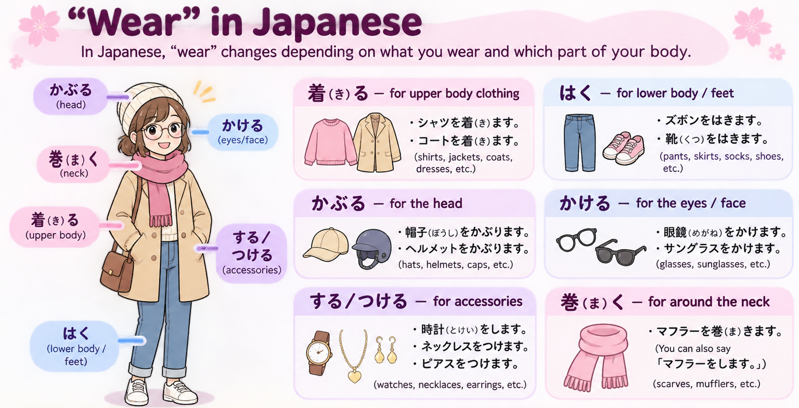

N4 GRAMMAR · EVERYDAY VERBS
How to Say “Wear” in Japanese
着る · はく · かぶる · かける · する · つける · 巻く
English uses “wear” for many items. Japanese chooses a different verb depending on what you wear and where you wear it. Learn the verbs, the difference between putting something on and wearing it, and practise with everyday examples.

01 One English Verb, Several Japanese Verbs
Choose the verb by the item and how it is worn, not by translating “wear” word for word.

着る — clothes on the body
はく — lower body and feet
かぶる — head
かける — glasses
する・つける — accessories
巻く — wrap around
羽織る — put on an outer layer
02 Which Verb Goes with Which Item?
着る
はく
かぶる
かける
する／つける
巻く／する
はめる／する
羽織る
Some accessories allow more than one natural verb. Do not treat every item as having only one correct verb. 着る is a general verb for putting on clothing; 羽織る highlights slipping on or draping an outer layer.
03 Putting On vs. Wearing — 〜ている
In Japanese, a simple nonpast verb often describes the action of putting something on. To describe what someone has on right now, use 〜ています.
Action — put on
State — be wearing
はきます → はいています
かぶります → かぶっています
かけます → かけています
します → しています
つけます → つけています
巻きます → 巻いています
羽織ります → 羽織っています
〜ています here describes a continuing resulting state, not necessarily an action happening at this very moment.
04 Useful Everyday Expressions
For many clothing items, use 脱ぐ (clothes, shoes), 取る (hats, glasses, accessories), or 外す (glasses, accessories). The natural choice depends on the item.
05 Practice — Choose the Right Verb
Choose the natural verb. For sentences about what someone is wearing right now, use the state form.
Show answers
1. 着ます — Upper-body clothing → 着る.
2. はきます — Shoes → はく.
3. かぶります — Hats → かぶる.
4. かけます — Glasses → かける.
5. 着ています — Currently wearing → 〜ています.
6. はめます — Rings → はめる (also する).
7. 巻きます — Scarves can be wrapped around the neck.
8. かけています — Wearing sunglasses → かけています.
9. はめます — Gloves → はめる (also する).
10. はいています — Wearing trousers now → はいています.